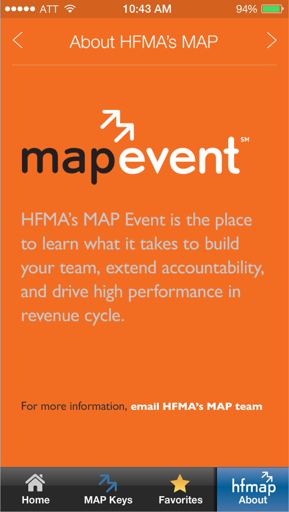

The MapKeys app helps healthcare finance professionals maintain a standard for measuring revenue cycle performance.
This self-contained app brought nearly 40 revenue cycle calculation formulas to mobile device users. My role included setting direction for the user experience, visual design, and user interface. I worked closely with a developer on the prototyping, testing, build-out, and shipment of the final product.

Print application. The app launched prior to the associations annual conference and was accompanied by a number of print pieces that I also designed.